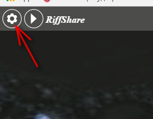
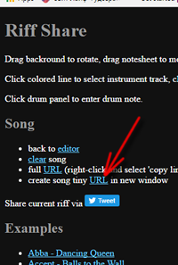
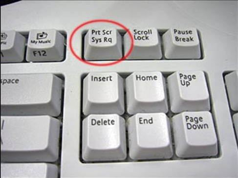
See original article at https://learningmusic.ableton.com/index.html
Using this simple grid, you can experiment with a huge range of classic beats in a variety of styles.
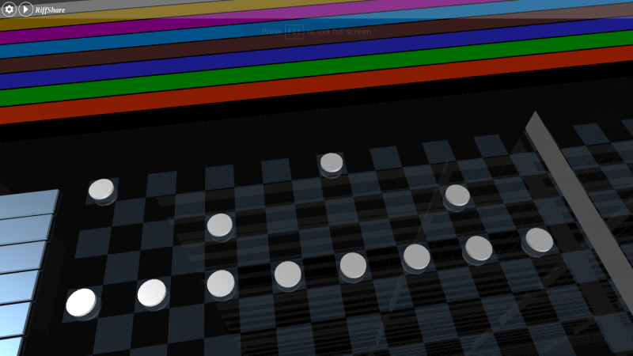
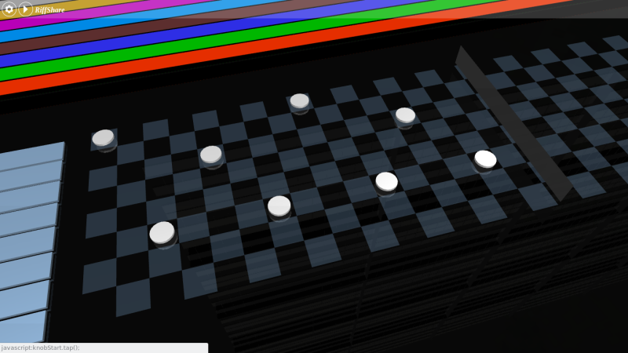
Notice that the house and rock beats are extremely similar. Besides their different tempos and minor differences in the hihat and kick drum lines, these patterns are the same. You'll find certain drum patterns reused in many styles.
This famous children's song is best known for its melody — the line of single notes that is commonly sung. Here it is in F major.
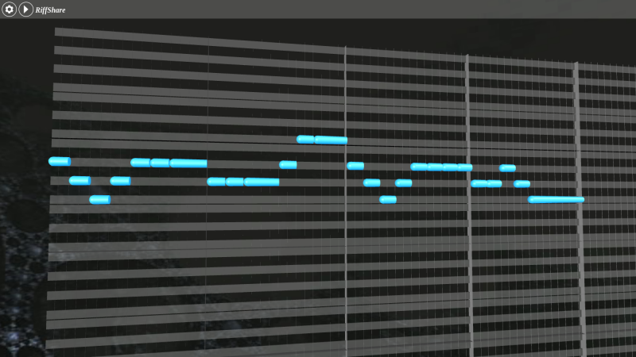
But combining (or harmonizing) the melody with some chords helps to fill out the texture. This is an example of a simple chord progression: a series of chords played in a particular order. In many types of music, chord progressions are used to create a sense of tension and release, by moving away from the tonic of the song and then back again.
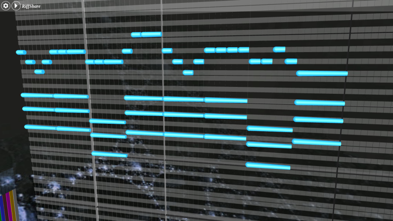
The chords we've added are F major and C major triads. But why did we choose these chords?
If you look at the melody, you can see that the notes that appear most often are notes that are in the accompanying chords. In the first bar, for example, the Fs and As are both part of the F major triad — these notes are chord tones. The Gs are non-chord tones, but they sound like they're simply "connecting" F and A. Non-chord tones that are between two adjacent chord tones are called passing tones.
This suggests one approach to choosing chords: look for chords that contain the notes of the melody.
But there's another principle at work here; these chords are built on the first and fifth notes of the scale (F and C). You can call these chords the 1 and 5 chords, respectively. Chord progressions that alternate between 1 and 5 create a strong sense of departure and arrival, tension and release. Compare the "stable" and "grounded" sound of the 1-chord passages with the "tense" and "unfinished" sound of the 5-chord passages.
Try to experiment with different chords, as well as with using different rhythms for the chords.
This progression of four chords forms the basis of hundreds of pop songs from the last few decades. In this video, dozens of them are combined together, all transposed to D major:
https://www.youtube.com/watch?v=HTYrkOZ5nCs (Axis of Awesome)
Try changing (or even just reordering) these chords and listen to how the balance of tension and release changes.
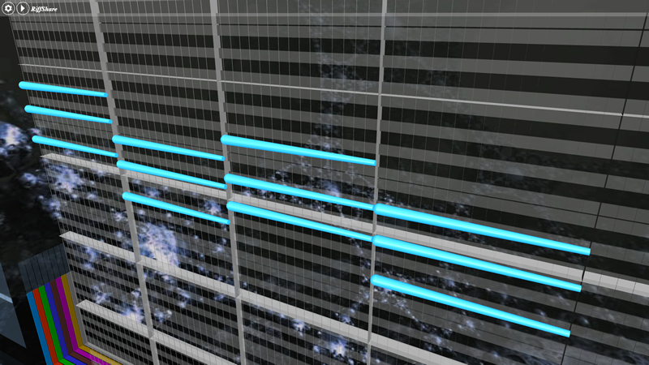
Basslines are patterns of low-pitched notes. They often serve to reinforce a song's chords, while also using interesting rhythmic patterns that relate to or contrast with the drums.
Video https://www.youtube.com/watch?time_continue=20&v=iUwfOOdg4eE
The short, snappy bass notes in this track are played on a Yamaha DX100 synthesizer.
Most synthesizers, including the DX100, provide a number of different pre-made sound settings (called presets). This specific sound is a DX100 preset called "Solid Bass" and was used on many techno and house tracks in the 90s.
In this early techno classic, the bassline plays short notes with an intricate rhythm. This creates an interesting contrast with the mostly four-on-the-floor drum pattern.
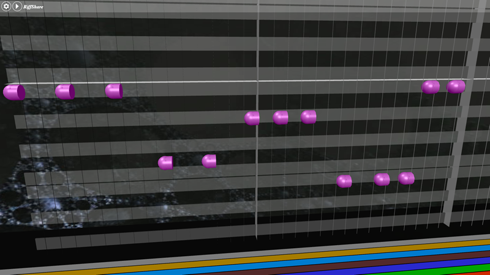
Experiment with your own basslines that use some of the defining characteristics of the original: short notes and intricate rhythms.
See https://www.youtube.com/watch?time_continue=33&v=yca6UsllwYs
Daft Punk don't share a lot of details about their process, so it's not entirely clear what instrument plays the bassline on this track. The style is consistent with the way a funk bassist might play a bass guitar, but this can also be done with a synthesizer.
This bassline has an interesting shape: a sort of "ascending stairs" pattern that repeats three times before "climbing" back down the notes of the scale. The use of three repeating variations followed by a new idea is a common composition technique.
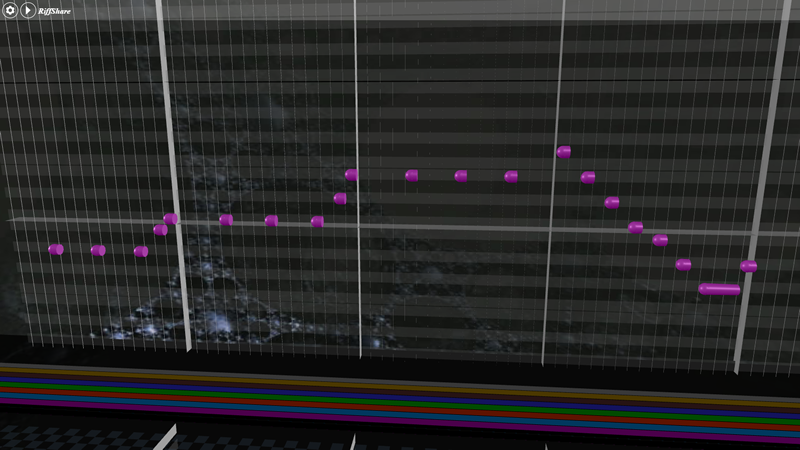
Experiment with your own basslines that use some of the defining characteristics of the original: intricate rhythms, passing tones, and ideas that repeat three times.
Even though there aren't really any chords played here, the notes in this bassline suggest some possible accompanying chords, (in a similar way to the "Mary Had A Little Lamb" example).
Listen to this "implied" chord progression along with the bassline.
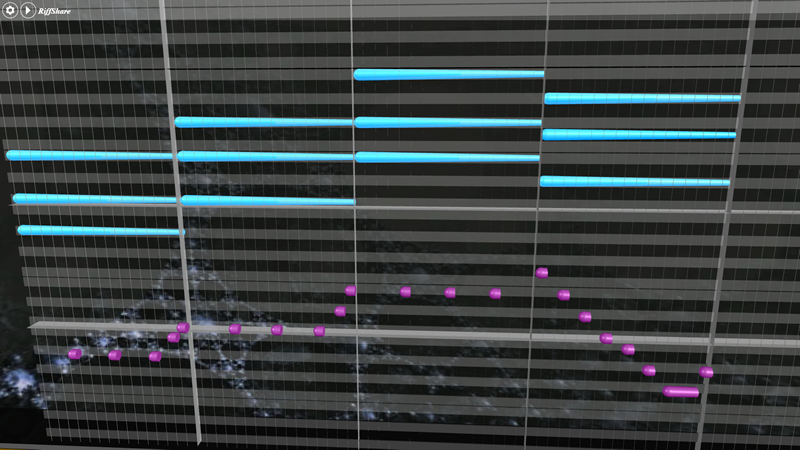
This particular chord progression (1-3-5-4) might sound familiar. It's also used in another Daft Punk track: "Get Lucky" (but in a different key).
See https://www.youtube.com/watch?v=5NV6Rdv1a3I
This doc in Google Doc https://docs.google.com/document/d/1yD75MduOa2j0U5CTfgXAUHtxLiUL4FepIIDd_nbB3lQ/